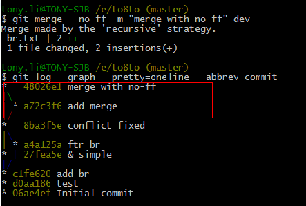

分支管理策略
通常，合并分支时，如果可能，Git会用Fast forward模式，但这种模式下，删除分支后，会丢掉分支信息。
如果要强制禁用Fast forward模式，Git就会在merge时生成一个新的commit，这样，从分支历史上就可以看出分支信息。
下面我们实战一下--no-ff方式的git merge：
首先，仍然创建并切换dev分支：
$ git checkout -b dev
修改br.txt文件，并提交一个新的commit：
$ git add br.txt
$ git commit –m “add merge”
现在，我们切换回master：
$ git checkout master
准备合并dev分支，请注意--no-ff参数，表示禁用Fast forward：
$ git merge --no-ff -m "merge with no-ff" dev
因为本次合并要创建一个新的commit，所以加上-m参数，把commit描述写进去。
合并后，我们用git log看看分支历史：
$ git log --graph --pretty=oneline --abbrev-commit
可以看到，不使用Fast forward模式，merge后就像这样：

分支策略
在实际开发中，我们应该按照几个基本原则进行分支管理：
1，首先，master分支应该是非常稳定的，也就是仅用来发布新版本，平时不能在上面干活；
2，那在哪干活呢？干活都在dev分支上，也就是说，dev分支是不稳定的，到某个时候，比如1.0版本发布时，再把dev分支合并到master上，在master分支发布1.0版本；
3，你和你的小伙伴们每个人都在dev分支上干活，每个人都有自己的分支，时不时地往dev分支上合并就可以了。
4，所以，团队合作的分支看起来就像这样：

小结：
Git分支十分强大，在团队开发中应该充分应用。
合并分支时，加上--no-ff参数就可以用普通模式合并，合并后的历史有分支，能看出来曾经做过合并，而fast forward合并就看不出来曾经做过合并